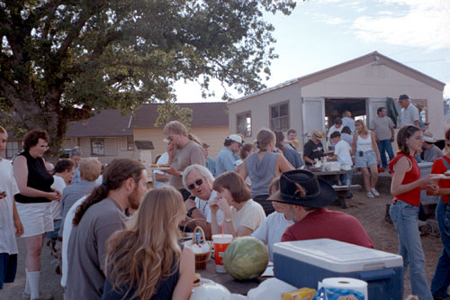

The annual FPOA/AANC Star-B-Que was held this year on a new moon weekend night - July 29th. This was my third Star-B-Que and each one brings with it some great memories. The party started with sizzling burgers and hotdogs. Friends got together. Before it got too hectic (and late) I walked around up to Coulter Row and to the Southwest Parking lot to see how many scopes were set up.
|  |
During my three walks I counted about 50 to 60 telescopes or mounted binoculars set up in these areas. There was at least one additional scope set up in front of the observatory. I'm sure my count isn't exact, as I was counting in the dark. I stopped and talked to the scope owners and looked through the scopes while counting too.
The events of the day continued. Mike Maiman of the San Mateo County Astronomical Society won the Astronomical Gastronomical competition with a spiral galaxy confection. He called it M-112! It was mm-mm good, I can tell you that! This barely won over SJAA's Akkana Peck's creation, Barnard Brownies, which were complete with dust lanes and powdered sugar star-clouds. All entries tasted great! (burp)
Twenty young people - from 4-year-olds to teenagers - entered the Create-a-Constellation contest. Each contestant was given a piece of paper with the stars of Ursa Major on it. From this bunch of dots, magical constellations and asterisms appeared. There were too many great ones to pick one winner, so the panel of judges (Mike Koop, last year's winner Amy Dynneson and yours truly) selected 7 winners. The winners were: Carmen Morales (calla lily), Kirsten Reis (the horse), Danielle Armstrong (toys in a toy box), Cassie Brice (raccoon) - I've seen that one on Fremont Peak, in my car! - Danny Avalos (a dragon), Joey (mountains and clouds), and Dan Dynneson (teddy bear). The brother-sister team of Amy and Dan Dynneson collaborated on one entry - winning a constellation prize! The prizes ranged from space origami to moon muck to glow-in-the-dark stars.
Mike Koop deserves a special prize for drawing Ursa Major the great bear for us. It looked a little like a fat weasel to me!
Mike Maiman also won the trivia contest, and the runners up were the team of Akkana Peck and Morris Jones. There were dozens of entrants. Nearly everyone was stumped by the question of which state capital is also the name of a constellation. Not our winner, though!
AANC awards had been given out at the annual AANC symposium earlier in the year. But Mike Ryan from the SCMAS was there at the picnic so we recreated his presentation for Amateur Astronomer of the year. Jim Badura of Rainbow Optics won the Commercial Award, Dr. Alex Filippenko won the Professional Astronomer award and the EAS Rachel Restoration Team was given the Special Award. At our AANC Symposium in March, Kevin Medlock gave an impromptu talk about the Rachel team work. It was one of the highlights of the event. Rachel is now sparkling with polished brass and gleaming paint in her new dome at the new Chabot Science Center in Oakland. Don't miss it!
FPOA handed out some awards too! Robert Hoyle was given an award for his "Photographic Elan." Don't miss some of Robert's astrophotos in the observatory classroom. These photos were all taken through the FPOA 30-inch Challenger, by the way. Morris Jones received the "Volunteer of the Year" award. Nice work, guys!
Mike Maiman and Mark Taylor seemed to walk up to the winners table more often than anyone else during the raffle. Thanks to all members and organizations who donated gifts. When a Herald-Bobroff Astro-Atlas was raffled off, I looked around for Crazy Ed. He wasn't there this year! I hope he was having a good time at his new dark sky homestead in Pearce, Arizona! We all miss you, Ed!
The talk at sunset was given by Mike Koop and me. We were presenting a talk on the NASA Multi-instrument Aircraft Campaign to study the Leonid Storm of November 1999. Dr. Peter Jenniskens had returned from Europe the previous day, but came for the program. He ably assisted us with our talk, adding fascinating details to an already interesting topic. A presentation about meteors (Leonid 101), was followed by the official NASA video of the mission, which was followed by actual film of the meteor storm as we observed it 30,000 feet above the Mediterranean Sea. While the storm played itself out, we talked about our experiences and answered questions. A good crowd stayed to listen, partly because of the interesting topic and also partly because the sky overhead was quite cloudy!
As darkness grew, the clouds dissappeared. But not for long. It was time to clean up and open the observatory. I wandered over to my telescopes on the SW lot. The cloudy dusk had dampened our observing spirits, and we were to be content with a binocular night. Dr. Peter Jenniskens, who wandered over with me, really wanted to see Comet Linear. Luckily about 5 scopes were set up in that lot, balancing out our binos. Mojo had prepared a star chart for the comet so we did know exactly where to look. We "borrowed" the 6 inch reflector telescope from a great couple we've met at SJAA meetings, and together we found the comet for Dr. Peter. Then he found the comet himself in another 6-incher at the southwest lot. This is the memory I'll remember from this Star-B-Que. Dr. Peter Jenniskens in his flight suit finding comet Linear!
Peter and I then walked over to the Coulter Row area to vist with another meteor volunteer friend. She happened to be showing off the asteroid Vesta in her 14.5 inch reflector. Peter found Vesta in binoculars and the telescope. As we walked among the many scopes, we overheard kids pointing out sucker holes to their parents at the telescope control. One man with a voice activated SCT was "telling" his scope to go to Uranus. I took a look, and the telescope had obeyed! It had turned into a sucker hole night. Despite the clouds, it had been a fun day and night on Fremont Peak!